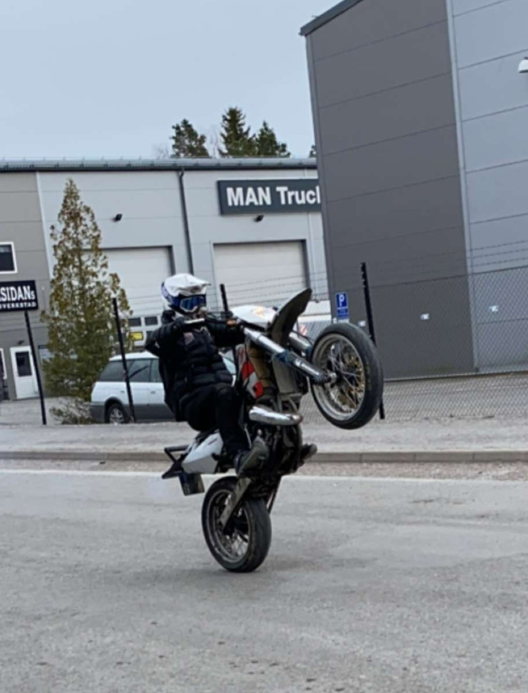
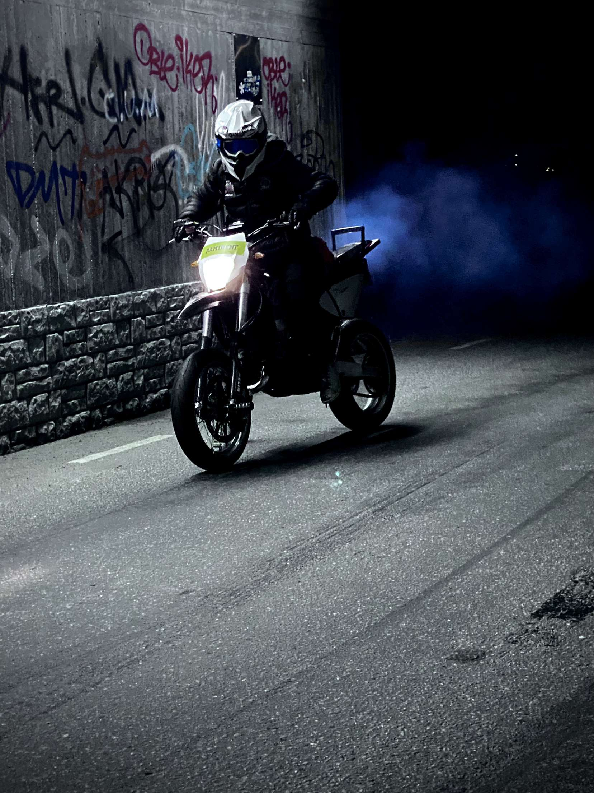

Jag har haft intresse för motorcyklar sedan jag skaffade moped för två år sen. I samband med att jag tog mopedkortet fick jag lära mig att det fanns lätt MC och då visste jag direkt att jag ville ha det.


I början ville inte morsan att jag skulle ha MC för att hon tyckte det gick allt för fort. Men jag tjatade och tjadade och sakta men säkert ändrade hon sin åsikt lite. Till slut köpte vi en hoj (som jag inte har bilder på) så jag kunde övningsköra.
Jag övningskörde då och då med mina föräldrar utan problem (de hade en egen motorcykel) och började även ta lektioner på trafikskola. Jag gjorde också riskutbildningarna som krävs och i mitten av augusti 2021 tog jag A1 körkortet. Vid den tiden hade jag kört min gamla hoj ganska regelbundet i ungefär ett halvår och var ganska trött på den, så jag bytte ut den mot en nyare och snabbare hoj.


Den nya hojen var även mycket snyggare än den gamla och många av mina polare blev lide avis
När jag skaffade nya hojen började jag bli intresserad av att köra på bakhjulet, så jag började öva. Sakta men säkert kunde jag komma högre och högre upp medans jag körde längre. Dock hade hojen lite små problem i form av att den gick väldigt orent.

Den har aldrig vart fri från problem men som tur så tycker jag att det är kul att mecka på saker och ting så service har bara vart en rolig sak att göra. Dock är det mycket roligare att köra än att skruva, men det har nästan vart mer skruva än köra på den här hojen :(
När man är 18 år får man ta medeltung MC, det innebär mer kraft och motorvolym vilket innebär att det går ännu fortare, så det är mitt nästa mål i MC världen!
